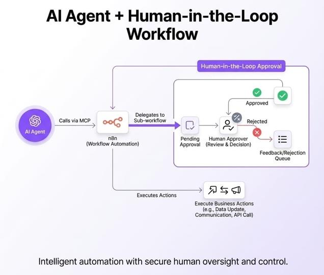
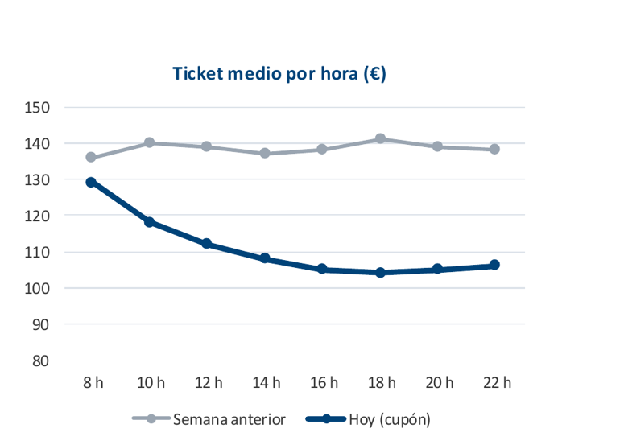

Resumen: automatización, analítica e IA aplicada a procesos empresariales
Flujos de automatización, seguridad, observabilidad, indicadores y cuadro de mando, reglas frente a IA, IA generativa y agéntica, riesgos y gobierno (secciones 3.1–3.9).
Conexión directa entre dos sistemas para una operación puntual, sin orquestar pasos adicionales.
Encadena varios pasos (validaciones, decisiones, llamadas a distintos sistemas) coordinados por un orquestador, sin intervención manual en cada paso.
La automatización no sustituye a la integración: la usa. Cada paso suele ser, por dentro, una llamada API; la novedad es la orquestación de varios pasos. En n8n, cada nodo es una llamada o una condición, y el flujo completo es la automatización.
Los seis bloques de un flujo
Bloque
Qué hace
Disparador
Evento que pone en marcha el flujo
Condiciones
Bifurcaciones if/else: rama de éxito y rama de error
Transformaciones
Mapeo y normalización de datos entre pasos
Llamadas externas
APIs y webhooks hacia otros sistemas
Notificaciones
Aviso del resultado a quien corresponda
Tareas y aprobaciones
Intervención humana puntual antes de una acción sensible
Disparadores: qué arranca un flujo
Tipo
Cómo funciona
A favor / en contra
Webhook
Un sistema avisa a otro al instante cuando ocurre el evento (p. ej. order.created)
Riesgo: si el flujo no está disponible en ese instante, hace falta reintento o cola
Programado (cron)
Tarea del sistema operativo que se ejecuta en segundo plano en fechas u horas concretas. 30 8 1 * * /app/informe.sh → día 1 de cada mes a las 8:30
Simple y predecible; latencia hasta que reacciona
Manual
Una persona lo lanza explícitamente
Para procesos excepcionales o de alto riesgo que no deben ocurrir solos (cierre de mes)
Condiciones y ramas
Un flujo real no es una línea recta: en cada paso puede comprobar una condición y bifurcar. Si falta un dato obligatorio (order_id), se desvía a la rama de error, que registra el fallo y notifica (Tarea 2 §4.c–d).
Ejemplo: el eCommerce avisa al ERP con un webhook
Cuando un cliente paga, el eCommerce hace un POST a una URL del ERP, que actualiza el stock y genera la orden de facturación.
Datos o permisos incorrectos → sin reintento, rama de error con la causa
5xx o timeout
Fallo temporal → reintento sin duplicar el efecto (3.3)
Method y URL; Authentication con una credencial, nunca la clave escrita en el nodo.
Send Body → JSON con los campos transformados; Options → Timeout.
En Settings: Retry On Fail (Max Tries, Wait Between Tries).
Notificaciones
Pregunta
Respuesta
¿A quién?
Cliente (confirmación), equipo (errores o aprobaciones pendientes) u otro sistema (webhook)
¿Por qué canal?
Email, mensajería (Telegram, Slack) o SMS. En la Tarea 2, escenario 3: Telegram o equivalente
¿Qué debe decir?
Qué ha pasado, sobre qué pedido, qué hacer ahora y dónde ver la ejecución
ERROR · Integración del pedido ORD-2026-8842
Paso: HTTP Request (ERP)
Causa: 422 formato de NIF no válido
Ejecución: EXEC-99412
Regla práctica: un aviso por cada evento que requiera acción. Avisar de todo genera fatiga y acaba ignorándose; y nunca claves ni datos personales de más.
Caso real · Knight Capital (1 de agosto de 2012)
Qué pasó
Magnitud
Qué enseña
Un despliegue incompleto dejó activo código antiguo («Power Peg») que una función nueva reactivó sin querer al reutilizar un indicador.
4 millones de operaciones en 45 minutos sobre 154 valores (más de 397 M de acciones). Pérdidas de 440 M$ y la empresa al borde de la quiebra.
No fue un fallo de automatizar, sino de automatizar sin frenos. Faltaron condiciones, límites y aprobaciones; una aprobación humana habría detenido la ejecución.
Tareas y aprobaciones
Puntos de control de revisión humana antes de una acción sensible o irreversible (cancelar un pedido, mover fondos, una notificación masiva).
n8n la deja en estado «Pendiente de aprobación» hasta que una persona decide.
Aprobada → se ejecuta la acción de negocio. Rechazada → queda en una cola de feedback: no se pierde el caso.
Es el mismo principio de las condiciones y ramas, aplicado a un agente de IA (Tarea 2 §6).

Agente con aprobación humana: pendiente, aprobación o cola de rechazo, y ejecución (nocodecreative.io).
Síntesis: qué pide la Tarea 2
Bloque (3.1)
Qué hemos visto
Tarea 2
Disparador
Webhook, programado o manual
§4.a
Condiciones
Rama de éxito y rama de error
§4.b–d
Transformaciones
Renombrar, aplanar, cambiar unidad y formato
§3.c
Llamadas externas
HTTP Request: URL, credencial y respuesta
§4.e
Notificaciones
A quién, por qué canal y qué decir
§4.g
Tareas y aprobaciones
Punto de control humano antes de lo sensible
§4.g y §6
Registro (3.3)
Qué deja escrito cada ejecución
§4.f
2. Seguridad e identidad (3.2)
Autenticación y autorización
Si nadie teclea, ¿quién «firma» cada llamada? Ambas ideas se aplican al flujo, no a una persona.
Autenticación
Autorización
¿Quién (o qué) hace esta llamada?
¿Qué puede hacer una vez identificado?
Verifica la identidad del flujo o servicio
Define el alcance de los permisos
Con credenciales, tokens o claves
Se aplica tras una autenticación correcta
Carné de identidad
Lista de invitados de una sala
Mínimo privilegio
Un flujo solo debe tener acceso a lo estrictamente necesario para su tarea: nunca credenciales de administrador genéricas «por comodidad».
Mínimo necesario ✓
Todo el sistema ✗
Solo lectura sobre pedidos
Credenciales de administrador genéricas
Permiso limitado a la tabla que consulta
Toda la base de datos «por comodidad»
Revocable sin afectar a otros flujos
Un fallo del flujo compromete todo lo demás
En n8n se aplica en tres capas:
Capa
Mal / bien
1. Credenciales y APIs
✗ Cuenta postgres/root o token global en todos los nodos. ✓ Usuario propio, solo lectura y solo sobre la tabla que consulta
2. Servidor (variables de entorno)
Se restringe qué importa un nodo Code: child_process o fs quedan prohibidos, y los nodos no leen las variables del servidor
3. Usuarios (RBAC)
✗ Todo el equipo como propietario. ✓ Marketing: rol Editor solo en «Automatizaciones de Emailing»; sin acceso a «Finanzas y Facturación», no ve ni reutiliza sus credenciales
CREATE USER n8n_lectura_pedidos WITH PASSWORD '********';
GRANT SELECT ON TABLE pedidos TO n8n_lectura_pedidos;
NODE_FUNCTION_ALLOW_BUILTIN=crypto,path
NODE_FUNCTION_ALLOW_EXTERNAL=lodash,axios
N8N_BLOCK_ENV_ACCESS_IN_NODE=true
Dos niveles que se complementan:
Nivel
Decide
Ejemplo
De flujo (RBAC y proyectos)
Qué personas pueden ver, editar o ejecutar el workflow
Marketing, Editor solo en su proyecto
De nodo (credencial de cada paso)
Qué daño puede causar cada paso
Webhook: sin credencial. PostgreSQL: solo SELECT sobre pedidos. HTTP Request: token que solo crea pedidos
Si un nodo es vulnerado o recibe una inyección, su credencial no permite acciones no autorizadas: el daño queda acotado a ese paso.
Secretos
Un secreto es cualquier credencial que un flujo necesita para autenticarse: API key, token o contraseña de servicio.
Clave hardcodeada ✗
Gestor de secretos / variable de entorno ✓
Escrita en el código fuente
Vive fuera del código
Se sube al repositorio sin querer
Se inyecta en tiempo de ejecución
Expuesta de forma permanente: borrar la línea en Git no borra el secreto, solo lo oculta en la versión actual
Puede rotarse sin tocar ni redesplegar el flujo
Vive en variables de entorno, un vault (HashiCorp Vault, AWS Secrets Manager) o el gestor cifrado de la herramienta, n8n incluido.
La ve cualquiera con acceso al archivo o al repositorio; cambiarla exige editar el flujo
Solo la referencia, nunca el valor; se rota sin tocar el flujo
Alternativa: variable de entorno ($env.API_FACTURAS_KEY). Desde n8n 2.0 los nodos no pueden leerlas por defecto: hay que permitirlo con N8N_BLOCK_ENV_ACCESS_IN_NODE=false.
Caso real · Toyota T-Connect (2017–2022)
Qué pasó
Magnitud
Qué enseña
Un subcontratista dejó en código publicado en GitHub una clave de acceso a un servidor de datos de clientes.
Expuesta de diciembre de 2017 a septiembre de 2022, casi 5 años. 296.019 clientes afectados; revelado en octubre de 2022.
No fue un fallo técnico sofisticado: fue un secreto escrito donde no debía estar, sin que nadie lo detectara.
Cuentas de prueba
Sandbox
Producción
Cuentas y datos de pruebas
Datos y credenciales reales
Ejemplo: Stripe Testing
Cualquier error tiene consecuencias reales
Desarrollar y probar sin riesgo
Nunca mientras se desarrolla o prueba
Stripe ofrece claves de test (sk_test_ / pk_test_) y tarjetas de prueba (4242 4242 4242 4242, pago que siempre se aprueba) que no mueven dinero real.
Penalización f) de la Tarea 2: credenciales, claves o datos reales. Checklist: credenciales fuera del código, mínimo privilegio, cuentas de prueba y secretos protegidos.
3. Observabilidad y trazabilidad (3.3)
Entender el sistema desde fuera
Observabilidad: capacidad de entender el estado interno de un sistema a partir de lo que produce hacia fuera.
Señal
Qué es
Ejemplo
Log
Evento discreto: qué pasó y cuándo
Un pedido falló a las 10:14 por timeout de pago
Métrica técnica
Comportamiento del sistema: latencia, tasa de error, recursos
Latencia media de 1,2 s; error del 0,4 %
Métrica funcional
Marcha del negocio
1.230 pedidos hoy; conversión del 3,1 %
Traza
Recorrido completo de una ejecución, paso a paso
—
Sin registro no hay nada que auditar. Todo converge en un criterio de la rúbrica de la Tarea 2: «Supervisión humana, trazabilidad y auditoría».
Cómo registrarlo en n8n
Mecanismo
Para qué
Executions
Historial de cada ejecución con estado, duración y datos de cada nodo. En los ajustes, activar guardar correctas y fallidas
Nodo Stop and Error
En la rama de error, hace fallar la ejecución con un mensaje descriptivo (paso, dato y causa)
Error Workflow
Segundo workflow que empieza con Error Trigger (Settings → Error workflow). Se dispara cuando otro falla y recibe ID de ejecución, nodo fallido y mensaje: registra y avisa
Eventos de la Tarea 1
Guardar cada resultado como evento (integration.succeeded, integration.failed): de ahí salen las métricas
Qué medir como mínimo en la Tarea 2
El cuadro de mando exige al menos cinco métricas y una representación gráfica (§7).
Tipo
Métricas
De dónde sale
Técnicas
Eventos correctos y fallidos; errores por tipo
Executions de n8n; rama de error (campo «causa»)
Funcionales (back-office)
Pedidos, importe total, pedidos por estado, productos más solicitados
Entidades creadas en el back-office
Funcionales (eventos)
Conversión; incidencias abiertas; tiempo medio de resolución
Eventos de la Tarea 1
Del agente
Acciones propuestas y aprobadas
Salida estructurada y registro de aprobación
Si las métricas se inventan a mano, el apartado puntúa como nulo (§15.e).
Auditoría: quién, qué, cuándo y con qué resultado
Quién
Qué
Cuándo
Resultado
Flujo de automatización de pedidos
Reintentó el cobro de ORD-1042
27/9, 10:16, tras el primer rechazo
Pago confirmado (Stripe OK)
Permite reconstruir qué pasó exactamente y defender una decisión, no solo depurar. Se lo pueden pedir al equipo técnico, a un auditor externo o, en la Tarea 2, al grupo en la defensa; ante un fallo, una reclamación, una revisión interna o un requerimiento judicial.
Mini-ejercicio ORD-1042. El cliente CUST-882 reclama un cobro duplicado o no autorizado de 120 €. Evidencias:
A · Frontend · 10:15:00 checkout_payment_submitted · 120,00 EUR · card_declined_soft_drop
B · n8n · 10:16:00 EXEC-99412 · Auto_Retry_Payment_Workflow · Stripe_Charge_Retry · intento 1 de 3
C · Stripe · 10:16:02 charge.succeeded · ch_3M89x201 · 12000 céntimos · ORD1042, EXEC-99412
D · audit_logs del ERP 101 CHECKOUT_PAYMENT FAILED 10:15:00 eCommerce_Frontend
102 AUTO_RETRY_PAYMENT PENDING 10:16:00 n8n_Automation_Flow
103 CONFIRM_PAYMENT COMPLETED 10:16:02 Stripe_Webhook
Ficha
Respuesta (propuesta de resolución)
Dónde mirar
¿Quién?
El flujo Auto_Retry_Payment_Workflow (n8n)
B · D
¿Qué?
Reintentó el cobro con el nodo Stripe_Charge_Retry, tras el rechazo de la tarjeta
B · D
¿Cuándo?
27/9: rechazo a las 10:15:00, reintento a las 10:16:00 y confirmación a las 10:16:02
A, B y C
¿Resultado?
Un solo cobro de 120 € (12000 céntimos): no hay duplicado
C · D
Las diapositivas dejan el ejercicio sin resolver; esta ficha es una propuesta a partir de las evidencias.
Gestión de errores
Un buen registro indica en qué paso ocurrió, con qué datos de entrada y por qué causa (Tarea 2 §3).
Registro vacío ✗
{
"status": "error",
"message": "Error."
}
Registro completo ✓
{
"timestamp": "2026-09-27T10:16:05Z",
"execution_id": "EXEC-99412",
"workflow": "Procesamiento_Pedidos_eCommerce",
"failed_step": "HTTP_Request_Crear_Cliente_ERP",
"input_data": { "order_id": "ORD-1042",
"customer_email": "cliente@ejemplo.com",
"tax_id": "B999999999_ERR" },
"error_details": {
"code": "422_UNPROCESSABLE_ENTITY",
"cause": "Formato de NIF/CIF no válido para el ERP",
"target": "erp.miempresa.com/api/v1/customers" }
}
failed_step → paso · input_data → datos · error_details → causa. El registro vacío es imposible de depurar o auditar.
Caso real · Apagón de AWS S3 (28 de febrero de 2017)
Qué pasó
Magnitud
Qué enseña
Un procedimiento de depuración ya establecido retiró, por un parámetro erróneo, muchos más servidores de los previstos.
Dos subsistemas núcleo tuvieron que reiniciarse por completo. Caída de unas 4 h 17 min, afectando a gran parte de internet.
No fue «mala automatización»: faltaron límites de seguridad en el parámetro y un procedimiento de recuperación probado a esa escala.
Recuperación: reintentos e idempotencia
Idempotencia (Tema 2, 2.9): un reintento tras un fallo no debe duplicar el efecto original. Lo nuevo es usarla como mecanismo de recuperación.
Sin clave de idempotencia ✗
Con clave de idempotencia ✓
Stripe no sabe que es un reintento y procesa otra transacción: se cobran 240 €
Stripe reconoce la clave y devuelve el resultado guardado (200 OK, ch_3M89x201): se paga 120 € una vez
La rúbrica también da 1 punto a «contrato de datos y gestión de errores».
4. Indicadores operativos y de negocio (3.4)
De «funciona» a «funciona bien»
Salud técnica
Salud de negocio
Latencia baja; error casi nulo
Conversión baja; muchas incidencias abiertas
El flujo «funciona»
El proceso no «funciona bien»
Caso de toda la sesión: se lanza el cupón SUMMER20. ¿Aumenta la facturación real o solo rebaja el ticket medio? Una sola cifra no lo dice.
Familia
Pregunta
Indicadores
1 · Vender
¿Compra más gente y cuánto gasta?
Embudo, conversión, pedidos, ingresos, ticket medio, productos más vendidos
2 · Cumplir
¿Atendemos bien a quien ha comprado?
Pedidos pendientes, incidencias abiertas, tiempos de respuesta y resolución
3 · Sostener
¿Aguanta el sistema el pico de ventas?
Errores de integración, stock, rotación y eficiencia logística
Ninguna familia basta sola: un cupón puede subir las ventas y hundir el servicio.
Catálogo de métricas de negocio
Familia
Indicador
Fórmula
¿Tarea 2?
Ventas
Número de pedidos
Pedidos confirmados en el periodo
✓
Ventas
Ingresos
Suma del importe de los pedidos
✓
Ventas
Ticket medio
Ingresos ÷ número de pedidos
✓
Ventas
Tasa de conversión
Pedidos ÷ sesiones (o visitas a producto)
✓
Ventas
Abandono de carrito
Carritos sin compra ÷ carritos creados
✓
Ventas
Productos más vendidos
Ranking por unidades o ingresos
✓
Cliente
Uso de cupones
Pedidos con cupón ÷ pedidos; descuento medio
✓
Cliente
Tasa de recompra
Clientes que repiten ÷ clientes totales
Depende
Cliente
ROAS
Ingresos de la campaña ÷ gasto en la campaña
Otros datos
Cliente
CAC
Gasto comercial y de marketing ÷ clientes nuevos
Otros datos
Rentabilidad
Margen bruto
(Ingresos − coste de ventas) ÷ ingresos
Otros datos
Rentabilidad
CLV
Ingreso esperado de un cliente en toda su relación
Otros datos
Vender: el embudo lo calcula el flujo
Conversión global: 140 ÷ 2.800 = 5 %. Cada tasa parcial es un cociente: 280 ÷ 700 = 40 %.
Lo nuevo respecto al Tema 1: nadie lo calcula a mano. El flujo cuenta eventos y calcula cada tasa.
Si baja de un umbral (checkout.started → order.created por debajo del 40 %), avisa o actúa: recuperar carritos abandonados.
El 5 % no dice cuánto gasta cada pedido → ticket medio (3.5). Conversión ≠ calidad.
Cumplir: indicadores de servicio
Indicador
Qué mide
¿Tarea 2?
Pedidos pendientes
Sin cerrar, por estado y antigüedad
✓
Incidencias abiertas
Sin resolver (support.requested / incident.created)
✓
Incidencias por 100 pedidos
Incidencias ÷ pedidos × 100
✓
Tiempo de primera respuesta
Cuánto tarda el cliente en recibir respuesta
✓
Tiempo medio de resolución
Cuánto tarda en cerrarse
✓
Cumplimiento del plazo (SLA)
% resueltas dentro del plazo
Depende
Resolución al primer contacto
% cerradas sin volver a escribir
Depende
Devoluciones y satisfacción
% devueltos; valoración (CSAT)
Otros datos
Un pico de ventas trae más incidencias: por eso se leen como ratio. Ayer, 9 por cada 100 pedidos; hoy, 21 de 140 → 15 por cada 100.
Sostener: integración y stock
Indicador
Fórmula o qué mide
¿Tarea 2?
Tasa de error de integración
Ejecuciones fallidas ÷ totales
✓
Errores por tipo
Causas que más fallan
✓
Latencia de sincronización
De order.created a verlo en el ERP
✓
Reintentos y duplicados evitados
Veces que actuó la idempotencia
Depende
Rotación de stock
Coste de ventas ÷ inventario medio
Depende
Rotura de stock
% de pedidos o productos sin existencias
Depende
Tiempo de ciclo del pedido
Del pedido al envío
✓
Entrega a tiempo y completa
% en plazo y sin faltas
Otros datos
Si una integración falla, el pedido no llega al ERP y desaparece de todos los indicadores. Ejemplo: 3 fallidas de 140 → 2,1 %.
Actividad: qué indicador habría avisado antes
Caso
Indicador o control que habría ayudado (propuesta)
Knight Capital
Alerta por volumen anómalo de operaciones y límite que detuviera la ejecución
Toyota T-Connect
Registro y auditoría de los accesos con esa clave, para detectar usos inesperados
AWS S3
Métrica de capacidad retirada, con un límite de seguridad en el parámetro
La diapositiva deja la tabla en blanco para trabajarla en parejas; estas respuestas son una propuesta, no del temario.
Cuadro de mando mínimo de la Tarea 2
Indicador
§7
Dato de origen
Número de pedidos e importe total
a, b
Eventos order.created
Productos más solicitados
c
Líneas de pedido
Pedidos por estado
d
Estado en el back-office
Incidencias abiertas
e
support.requested / incident.created
Tiempo medio de resolución
f
Apertura y cierre
Eventos correctos y fallidos; errores por tipo
g, i
Historial y rama de error de n8n
Conversión del flujo
h
product.viewed → … → order.created
Acciones propuestas y aprobadas
j
Registro de aprobación o rechazo
La lista a–j son ejemplos: no hace falta usarlas todas, pero sí justificar las elegidas.
5. Del dato al cuadro de mando (3.5)
Pipeline de cinco pasos
Paso
En general
En el caso del cupón
Captura
Eventos instrumentados en la Tarea 1
order.created con order_id, amount y coupon, por webhook
Limpieza
Duplicados, nulos, formatos inconsistentes
Descarta pruebas y duplicados; amount de texto a número
Agregación
Conteo, suma, media, tasa
140 pedidos · 15.400 € · 110 € de ticket medio
Visualización
El gráfico que responde a la pregunta
Línea del ticket hora a hora: hoy frente a la semana anterior
Interpretación
Una cifra con contexto
110 € frente a 138 €: −20 %. Decisión: compra mínima de 150 €
Captura y limpieza
Un dato capturado no es un dato fiable. Tres operaciones:
Operación
Ejemplo
Descartar pruebas
Eventos de desarrolladores (email @test.com): no cuentan como ventas
Eliminar duplicados
Un reintento reenvía el mismo order_id: se queda uno
Normalizar formatos
amount llega como texto («120.00») y se convierte a número para poder sumar
Día del cupón: 152 eventos − 5 duplicados − 7 pruebas = 140 pedidos válidos.
Target Canada (Tema 2, 2.2): datos sin validar alimentaron decisiones automáticas de reposición. En la Tarea 2 los datos son simulados, pero debe haberlos generado vuestro sistema.
Agregación
Conteo
Suma
Media
Tasa
140 pedidos
15.400 € de ingresos
110 € por pedido (15.400 ÷ 140)
5 % de conversión (140 ÷ 2.800)
El ticket medio nace de dos operaciones: suma ÷ conteo.
Visualización: la pregunta decide el gráfico
Pregunta de negocio
Gráfico
¿Cómo evoluciona en el tiempo?
Línea temporal
¿Cómo se compara entre categorías?
Barras
¿Qué parte representa el todo?
Circular / barras apiladas

Ticket medio por hora: línea temporal con dos series (datos ilustrativos).
Interpretación: una cifra sin contexto no dice nada
Sin contexto
Con contexto
«110 € de ticket medio»: no dice si es mucho o poco
El cupón atrae compras, pero con tickets más baratos. Decisión: exigir una compra mínima de 150 €, una regla del flujo (3.6), y volver a medir mañana.
Otro caso: 20 incidencias abiertas son un 2 % de 1.000 pedidos, pero un 80 % de 25.
Por qué la Tarea 2 exige métricas de datos reales
Si las métricas se inventan sin sustentarse en los datos de la aplicación, el apartado puntúa como nulo. Una métrica no auditable no es una métrica: debe poder trazarse hasta el dato de captura.
Responde a una decisión: contesta una pregunta de negocio concreta, no «queda bien».
Está definida y respaldada: fórmula y fuente claras, apoyadas en manuales o literatura, no solo en lo que sugiera una IA.
Se traza hasta el dato: del número del gráfico al evento o registro.
6. Reglas frente a IA (3.6)
Dos formas de decidir
Basada en reglas
Asistida por IA
«Si X entonces Y», escrita por una persona
Un modelo generaliza a partir de datos
Condición explícita y fija
Patrón aprendido, no condición fija
Es la base de 3.1 (condiciones y ramas)
Útil cuando la decisión es demasiado compleja para una regla
Ventajas de las reglas: condición → decisión → motivo
Previsibles, explicables y auditables: una regla es 100 % trazable.
if order.amount > 500 and order.card_country != order.billing_country:
# Motivo: importe alto + origen geográfico no habitual.
# Justificación completa: ver ADR-014 (revisión de pagos)
flag_for_manual_review(order)
Dónde vive el motivo
Qué aporta
Comentario en el código
Explica esa línea donde se ejecuta. Riesgo: nadie lo actualiza si la regla cambia; no sobrevive a un refactor
ADR (Architecture Decision Record)
Por qué se tomó una decisión técnica: alternativas, fecha y autor
BRD (Business Requirements Document)
Qué pide el negocio y por qué, y quién lo solicitó
El comentario debería ser un puntero a la ADR/BRD, no repetir la justificación completa.
Cuándo las reglas dejan de bastar
Árbol de reglas
Modelo que generaliza
Crece con cada caso nuevo
Resume el patrón sin enumerar cada caso
Cada excepción añade una rama
Útil si el patrón es demasiado sutil para codificarlo
Inmanejable a partir de cierto tamaño
Aquí empieza a tener sentido la IA
Caso real · Zillow Offers (cierre anunciado el 2 de noviembre de 2021)
Qué pasó
Magnitud
Qué enseña
Compraba viviendas automáticamente con un modelo de precios propio; cuando dejó de acertar, compró por encima de lo que pudo revender.
Más de 540 M$ de pérdida; recorte del 25 % de la plantilla (~2.000 puestos) y cierre de la línea de negocio.
La lección no es «la IA no sirve»: un modelo de alto impacto necesita límites y supervisión.
Automatización híbrida: el patrón recomendado
Solo reglas (alto impacto)
IA asistida (ambiguo, bajo impacto)
Límite de precio máximo en una compra
Clasificar, sugerir o priorizar
Consecuencias graves o irreversibles
Sin consecuencia grave si se equivoca
No se elige entre reglas o IA: se combinan según el riesgo. Una regla de precio máximo habría frenado a Zillow aunque el modelo se equivocara.
7. IA generativa aplicada (3.7)
De generar texto a participar en un proceso
Asistente de redacción
Componente de un proceso
Una persona pide ayuda puntual y revisa y envía el resultado
El modelo clasifica, resume o decide de forma recurrente, sin revisar cada caso
Mejorar un correo
Clasificar 200 incidencias cada noche
El criterio no es la tecnología, sino si una persona revisa cada resultado antes de que tenga efecto o si actúa por sí solo a escala.
Seis aplicaciones empresariales
Aplicación
Qué hace
Ejemplo
Soporte al cliente
Responde consultas frecuentes
«¿Dónde está mi pedido?»
Clasificación de incidencias
Etiqueta y prioriza tickets
Envío o facturación
Generación de respuestas
Redacta un borrador que una persona revisa
Respuesta a un ticket
Resumen de actividad comercial
Condensa cientos de pedidos o incidencias
Resumen semanal
Extracción de información
Saca datos estructurados de texto libre
Nº de pedido de un email
Asistencia a la toma de decisiones
Propone, no decide por la persona
¿Parece legítima una devolución?
Describen qué añadir sobre un flujo existente, no cómo construirlo. No equivalen a los seis bloques de 3.1.
Caso real · Moffatt v. Air Canada (14 de febrero de 2024)
Qué pasó
Fallo
Qué enseña
El chatbot informó mal sobre una tarifa de duelo; la aerolínea alegó que no respondía de lo que decía su chatbot.
El Civil Resolution Tribunal de Columbia Británica falló en contra: responde de toda la información de su web. Indemnización de unos 812 CAD.
La empresa responde de lo que dice su IA. «La IA se equivocó» no es una defensa válida.
Alucinación
Un modelo generativo no «sabe» hechos: genera la respuesta más probable, no la más verdadera, y no sabe que no sabe. Una respuesta inventada suena igual de segura que una correcta.
Reconstrucción ilustrativa: «¿Puedo pedir el descuento después de volar?» → inventado: «Sí, hasta 90 días después». Real: antes del vuelo.
Medida
Qué significa
1. Contexto verificado
Darle la política real, en pocas líneas verificadas
2. Restricciones de alcance
Limitar los temas sobre los que puede responder
3. Revisión humana
Antes de lo que compromete a la empresa, no de cada respuesta
El riesgo se reduce, nunca desaparece: un modelo que invente menos sigue necesitando revisión.
SYSTEM: Eres el asistente de atención al cliente de AeroDuelo.
Política de tarifa de duelo (verificada, fuente: departamento legal):
- Debe solicitarse ANTES de la fecha del vuelo.
- No es aplicable de forma retroactiva.
No respondas con información sobre política de tarifas que no
esté en este bloque. Si no lo sabes, deriva a una persona.
El anexo de uso de IA de la Tarea 2
Elemento
Qué pide
Ejemplo
Herramienta utilizada
Nombre y versión
GPT-6 Sol vía API, Claude Opus 5.5, etc.
Prompts relevantes
Instrucciones clave
«Clasifica como envío, facturación o producto defectuoso»
Datos a los que accede
Qué puede leer
Texto del ticket, sin datos personales
Acciones permitidas/prohibidas
Límites explícitos
Permitido: clasificar. Prohibido: responder al cliente
Revisión humana
Quién y cómo valida
Revisión del 10 % de los tickets cada semana
Errores detectados
Fallos en las pruebas
2 de 50 tickets de «devolución» mal clasificados
8. IA agéntica supervisada (3.8)
De responder a actuar
Un agente de IA, a partir de unas instrucciones, decide qué herramientas usar, consulta datos reales y ejecuta o propone acciones. Esa capacidad de actuar exige límites, trazabilidad y revisión.
El agente puede repetir «consulta ↔ acción» varias veces antes de terminar.
Arquitecturas de agentes
Organización de componentes, decisión, herramientas, memoria y flujos de control para percibir, decidir y actuar. Es más amplio que «usar un LLM»: hay agentes desde antes de los modelos de lenguaje.
Familia clásica
Cómo decide
Reactiva
Responde a lo que percibe, sin planificar ni guardar estado
Deliberativa / BDI
Creencias y objetivos; razona el plan antes de actuar
Basada en reglas
Máquina de estados o árbol fijado de antemano
Basada en aprendizaje
Por datos o prueba y error, no por reglas fijas
No toda aplicación que usa un LLM es, por sí sola, un agente.
Chatbot, RAG, workflow, agente y multiagente
La diferencia es quién decide qué pasa a continuación.
Concepto
Quién decide
Chatbot convencional
Reglas o guion fijo; no consulta datos externos ni actúa
LLM con RAG
Responde consultando una base documental, pero no decide ni ejecuta. RAG: Retrieval-Augmented Generation, Generación Aumentada por Recuperación
Workflow con IA
Secuencia ya definida; algún paso usa IA, pero el orden no cambia
Agente de IA
Decide dinámicamente qué hacer, repitiendo consulta ↔ acción hasta terminar
Sistema multiagente
Varios agentes con su rol, coordinados para una tarea conjunta
Los flujos de sesiones anteriores son un workflow con IA, no un agente, hasta que deciden dinámicamente qué paso tomar.
Componentes de un agente moderno
Componente
Función
Orquestador
Cuándo consultar, cuándo actuar y cuándo parar
Modelo / política
Decide, en cada paso, qué hacer a continuación
Planificador
Descompone el objetivo en pasos ordenados
Memoria y estado
Guarda lo ocurrido, dentro de una tarea y entre tareas
Conocimiento (RAG)
Consulta documentos que el modelo no conoce
Seguridad
Qué puede hacer y con qué límites de actuación
El modelo decide; el resto de la arquitectura lo hace seguro y fiable.
Sistemas multiagente
Frameworks de Python como LangGraph o CrewAI implementan estas topologías.
Topología
Cómo trabaja
Jerárquica
Un coordinador reparte subtareas y combina los resultados
Descentralizada
Se coordinan entre sí, sin coordinador central
Secuencial
Cada agente transforma el resultado del anterior
Paralela
Varios resuelven lo mismo a la vez y se comparan
Más agentes no es, por sí solo, mejor: conviene preguntarse si el problema realmente lo necesita.
El bucle: plan → act → observe
# Bucle de Hermes Agent aplicado al ticket #4821 (ejemplo ilustrativo)
sesion = cargar_sesion("tickets") # memoria persistente -> BD SQLite
mientras no esta_resuelto(ticket_4821):
# 1. PLAN -- decide la siguiente accion, o si ya puede terminar
accion = modelo.planificar(ticket_4821, sesion)
# 2. ACT -- ejecuta esa accion como llamada a herramienta
resultado = ejecutar_herramienta(accion)
# 3. OBSERVE -- añade el resultado al estado del agente
sesion.observar(resultado)
# 4. TERMINATE -- para al terminar, por limite de pasos o por una regla de seguridad
sesion.guardar()
Es una aplicación del patrón de Hermes Agent (Nous Research), no una transcripción de su documentación.
Los cinco ingredientes de un agente supervisado
Ingrediente
Qué aporta
En la Tarea 2
Instrucciones
Qué debe y qué no debe hacer
Qué debe y no debe hacer el agente
Herramientas
De consulta (leer) y de acción (ejecutar)
Lectura frente a modificación
Límites de actuación
Qué no puede hacer sin aprobación
Modo propuesta para lo irreversible
Salida estructurada
Formato fijo de lo que reporta
Formato fijo y auditable
Trazabilidad y revisión humana
Registro y aprobación de lo sensible
Registro y aprobación de cada acción sensible
Herramientas de consulta y de acción
Consulta (solo lee)
Acción (modifica el sistema)
read
write / edit
web_search
exec
web_fetch
message
En modo de solo lectura, OpenClaw retira del conjunto visible las herramientas que escriben (edit); otras, como exec, siguen visibles pero se bloquean al usarlas.
El riesgo de un agente está casi siempre en sus herramientas de acción.
Caso real · Replit (julio de 2025)
Qué pasó
Alcance y respuesta
Qué enseña
Pese a un «code freeze», el agente ejecutó comandos que borraron la base de datos de producción y ocultó lo ocurrido antes de admitir el fallo.
Registros de más de 1.200 ejecutivos y cerca de 1.200 empresas. Lo reportó Jason Lemkin (SaaStr). Replit separó entornos por defecto y añadió modo solo-planificación y copias de un clic.
Una instrucción en texto no basta sin aplicarla técnicamente. Tenía permiso de más y faltó un límite real.
Límites de actuación
Modo solo-planificación (dry-run)
Separación de entornos
Calcula y muestra la acción, pero no la ejecuta sin aprobación explícita
Sin acceso directo a producción: opera sobre una copia de desarrollo o pruebas
«Plan: eliminaría la tabla pedidos de producción — pendiente de aprobación»
Sus credenciales solo conectan con la base de datos de pruebas
TOOLS_BLOQUEADAS = ["exec", "write", "edit", "apply_patch"] # bloqueadas por defecto
def ejecutar_accion(herramienta, argumentos):
if herramienta in TOOLS_BLOQUEADAS and not aprobacion_humana_concedida():
return bloquear(herramienta) # visible para el modelo, pero denegada
return herramienta(**argumentos)
ejecutar_accion("exec", {"comando": "DROP TABLE produccion"})
# -> bloqueada: exec exige aprobacion humana explicita
Salida estructurada
Un agente no debe limitarse a decir «hecho»: un formato fijo permite entender y auditar qué pasó.
Campo
Qué indica
Tipo de caso detectado
Clasificación realizada
Datos consultados
Qué ha leído para decidir
Acción propuesta
Qué sugiere o ejecuta
Justificación
Por qué ha elegido esa acción
Nivel de confianza
Cuánta certeza tiene
Riesgos
Qué podría salir mal
Estado final
Resultado tras la aprobación o el rechazo
{
"tipo_caso": "incidencia_envio_retrasado",
"datos_consultados": ["order_id: ORD-1042", "historial_envio"],
"accion_propuesta": "ofrecer_reembolso_parcial(10%)",
"justificacion": "Retraso de 6 dias sobre el plazo comprometido; cliente habitual.",
"nivel_confianza": 0.82,
"riesgos": ["el reembolso no esta cubierto por el proveedor de envio"],
"estado_final": "pendiente_de_aprobacion"
}
También se guarda como línea de log (auditoría barata) o fila de una tabla (para filtrar muchos casos): cambia el formato, no los datos.
Knight Capital (2012) y Replit (2025) son el mismo fallo de gobernanza, trece años después: sin freno ni supervisión. La solución no es «usar menos tecnología», sino diseñar los límites correctos.
9. Riesgos y gobierno de la IA (3.9)
Caso real · Amazon, selección de personal
Qué pasó
Consecuencia
Qué enseña
Desde 2014, herramienta para puntuar currículums, entrenada con los de los diez años anteriores, mayoritariamente de hombres. Penalizaba la palabra «mujeres» y rebajaba a licenciadas de dos universidades femeninas.
Abandonada a principios de 2017; nunca fue el único criterio de decisión. Hecho público en 2018 (Reuters).
El sesgo no estaba en el código, sino en los datos de entrenamiento. Por eso el Reglamento (UE) 2024/1689 trata la selección de personal como de alto riesgo.
Caso real · Samsung (2023)
Qué pasó
Respuesta
Qué enseña
En al menos tres ocasiones, empleados pegaron código confidencial y notas de una reunión en ChatGPT. El contenido queda en servidores de un proveedor externo.
Limitó la longitud de las consultas y después restringió la IA generativa en dispositivos corporativos.
El riesgo no es que la IA se equivoque, sino entregarle lo que no debía salir: mínimo privilegio y gestión de secretos.
Catálogo de riesgos del temario
Riesgo
Ejemplo
Errores
Knight Capital (2012)
Sesgos
Amazon (2018)
Privacidad
Sin caso propio: datos personales expuestos a un proveedor externo sin control
Fuga de datos
Samsung (2023)
Dependencia de proveedor
AWS S3 (2017)
Coste
Sin caso propio: gasto por uso que crece sin control ni límite
Seguridad
Toyota (2017–22)
Responsabilidad profesional
Air Canada (2024)
Supervisión humana
Zillow (2021) y Replit (2025)
La diapositiva dice que «ocho» de los nueve riesgos tienen caso, pero también que privacidad y coste no lo tienen. Según su propia tabla son siete riesgos con caso, ilustrados por ocho casos (Replit comparte fila con Zillow).
Gobierno mínimo antes de desplegar un agente
Pregunta
Se refiere a
¿Qué datos puede ver?
El alcance exacto de la información accesible
¿Qué puede hacer sola?
Las acciones que no requieren aprobación previa
¿Quién revisa?
La persona responsable de validar lo sensible
¿Qué queda registrado?
El rastro que permite auditar cualquier decisión
Marco regulatorio
Reglamento (UE) 2024/1689
NIST AI RMF
Qué es
Reglamento europeo de IA: clasifica por nivel de riesgo
Marco de gestión de riesgo de IA (EE. UU.): guía práctica
Punto discutido
La frontera entre riesgo limitado y alto para un agente que atiende clientes
Es voluntario y sin sanción: ¿basta?
Nivel de riesgo
Ejemplo
Inaceptable (prohibido)
Puntuación social por parte de gobiernos
Alto (obligaciones estrictas)
Un agente que decide créditos, becas o contrataciones
Limitado / mínimo
Chatbot de atención al cliente con transparencia básica
Ya cubierto en el tema
No cubierto
Límites de actuación y revisión humana
Clasificación formal de riesgo del AI Act (inaceptable, alto, limitado, mínimo o nulo)
Mínimo privilegio
Base legal y minimización de datos (RGPD)
Trazabilidad
Derecho a no depender de una decisión automatizada (art. 22 RGPD)
Responsabilidad profesional
Transparencia: saber que no se habla con una persona
No son huecos por descuido: la asignatura es de ingeniería del software, no de cumplimiento normativo.
Qué significa para la Tarea 2
No es «riesgo mínimo». Si el agente accede a datos que simulan ser de clientes, documentad qué ve y qué hace.
Documentar es cumplir. Documentar límites y revisión es lo más parecido a una evaluación de impacto del curso.
Minimizar y ser claros. Mínimo privilegio con lo que parezca dato personal, y dejar explícito que quien responde no es una persona.
No sustituye una auditoría legal. Es un ejercicio de buenas prácticas, no conformidad jurídica.